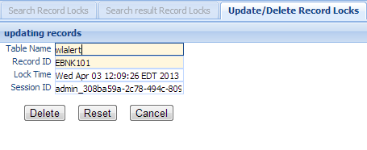

The system administrator can decide whether to lock the record or not when a user is editing the record. If the system is configured to lock the record and use table lock, a record is added in the Record Locks table when a user is editing a record . When user finished editing, either via update or cancel, or session timeout, the lock is released by deleting the record mark from the Record Locks table.
In rare situation, if the application server is terminated abruptly, the record will stay in the Record Locks table. This function is used to manage those records in the Record Locks table, either by deleting unused one, or forcing a user to unlock it.
Click the Record Locks in the left navigation menu under Administration, a new Record Locks Tab folder will be created in the right panel.
There are 2 sub-Tab folders: Search Record Locks and Search Result Record Locks.
Note
There is no Create New or Update function on Record Locks. But there is Delete function on Record Locks.
Search Criteria
| Field Name | Description |
|---|---|
| Table Name | The table name that the locked record belongs to. |
| Record Id | The locked record Id. |
| Lock Time | When the lock occurred. |
| Session Id | The session Id of the user who locks the record. |
| AND | Select AND radio box if you want those criteria add together. |
| OR | Select OR radio box if you want to get the result if either of the criteria is met. |
The top part is the table which shows the list of the Record Locks that meet the search criteria. The bottom part is the details of the selected entry.
Double Click the selected record in the table to modify this entry. A new Tab folder “Update/Delete Record Locks” will be added, as show below.
